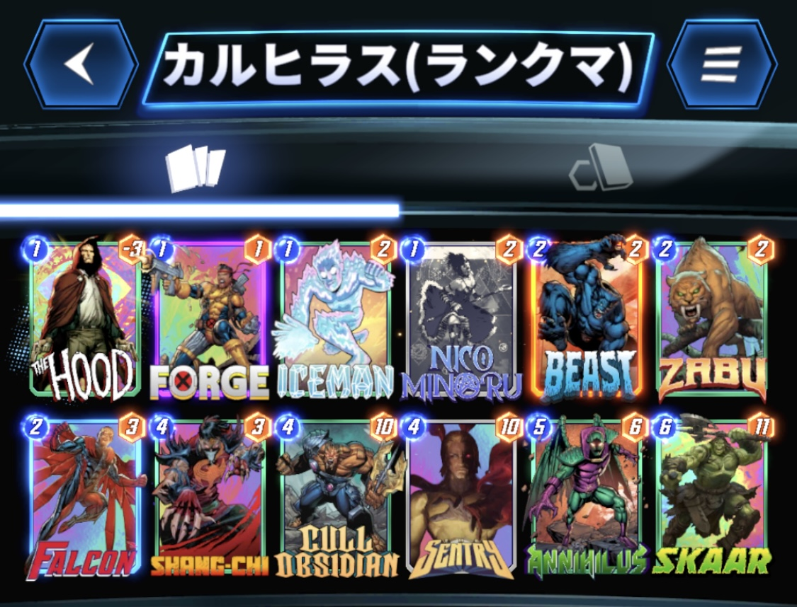

今回は、私７(@NANA1051815)が使用した『カルヒラス(ランクマッチ用)』デッキを紹介したいと思います。
デッキ内容はこちら

1コスト：ザ・フッド、フォージ、アイスマン、ニコ・ミノル
2コスト：ビースト、ザブー、ファルコン
4コスト：シャンチー、カル・オブシディアン、セントリー
5コスト：アニヒラス
6コスト：スカー
以前紹介したアニヒラス型バウンスデッキの改良版です。
バランス調整によって、ビーストのコスト減少効果が1ターンのみになってしまいましたが、2コストになったことで、より小回りが利くようになりました。
この型の多くはウェアウルフ採用型が一般的かと思いますが、あえてスカーを採用しています。
理由としては、ウェアウルフを5、6ターン目に引いたときに育てきれずに手札で腐らせてしまうためです。
また、カル・オブシディアン、セントリーとも相性がいいのも採用の決め手となりました。
攻め方としては、
①カル・オブシディアン、セントリー、スカー、デーモンなど高火力カードで攻める。
②アニヒラスでマイナス要因を送りつける。
③シャンチーで相手の高火力カードを処理する。
これらの攻め方を組み合わせて戦いましょう。
詳しく解説していきます。
それでは各ターンの動き方を解説していきます。
フッドは、ファルコン、ビースト、アニヒラスのいずれかを引けていれば積極的に出しましょう。
ファルコン、アニヒラスを引けているのであれば、置くロケーションは問いません。
ビーストのみの場合は右ロケに置くのが無難かと思います。（セントリーとの兼ね合い）
フォージ、アイスマンは積極的に出してかまいません。
ニコも回収手段があるなら積極的に出しましょう。「次のカードをプレイした後、そのカードを1つ右のロケーションに移動する。」以外は、割と相性がいいです。
ザブーで3ターン目に繋げるも良し、ファルコンで1コストを回収するも良しで、手札次第で有効な方を選びましょう。（個人的にはザブーを出しがちです。）
ビーストは、ヴォイドの回収役も担えるので2ターン目では温存しておきたいです。
2ターン目にザブーを出せていたら、カル・オブシディアンかセントリーを出しましょう。
セントリーを置く場合、ヴォイドの処理のために、ビーストかアニヒラスを握っていることが重要です。
ザブーを置けていなくても1、2ターン目のような動きで次に繋げましょう。
また、アニヒラスを握っているのであれば、1コスト＋ビーストで次のターンに繋げるのもありです。
3ターン目にカル・オブシディアンかセントリーを置けていたら、スカーを4コストで扱えるので出してかまいません。
ただし、シャンチー警戒で10パワー以上のカードはロケーションを分散させましょう。
アニヒラスを握っている場合は、このターンにセントリーを出してさらにスカーのコストを減少させるのもありです。
また、このターンにフッドをビーストで回収することで、次ターンにフッド＋アニヒラスで相手を妨害しつつデーモンを手札に加えることができます。
このターンにアニヒラスを使うかの判断をします。
リーチが出てきそう、また相手がアニヒラスを採用していないデッキタイプであれば迷わず使って構いません。
同系統のデッキ、ロキデッキ、破壊デッキ(有利に働く場合もあり)には注意が必要で、これらのデッキには、最終ターンに後攻を取ったうえでアニヒラスを使いたいです。
そのため、このターンはロケーションパワーの調整をしてもかまいません。
5ターン目にアニヒラスを使っているのであれば、シャンチーやスカーなどでロケーションを取っていきましょう。
このターンにアニヒラスを使う場合は、デーモンと合わせて出すのが理想的です。
基本的な動きはこのようになりますが、相手の動きも手札運もあるので、必ずしもこのような理想的な動きができるとは限りません。
癖のあるカードが多く、局面局面で柔軟に対応しなければいけないので慣れが必要です。
また文字だけでは伝わりきらないと思いますので、プレイ動画を参考にしてみてください。（準備中です）
負け筋としては、
①アーマーやプロフェッサーXで、フッドやヴォイドを固定される場合
②シャンチーで高パワーカードを除去される場合
③キルモンガーで1コストカードを一掃される場合
④リーチで６ターン目の計画が台無しになる場合
⑤トリビュデッキで規格外のパワーを出される場合
などが挙げられます。
それぞれ詳しく見ていきましょう。
フッドやセントリーを採用しているため、マイナス要因の処理が強いられます。
処理方法としてビーストやアニヒラス頼りになり、マイナス要因を抱えたまま複数ターンを跨がなければいけません。
その間に、相手がアーマー＋3枚のカードでロケーションを埋めてきた場合、アニヒラスでは対処することができません。ビーストの確保が必須です。
プロXだとロケーションごと固定されてしまうので、対処が難しくなります。
そのためプロXの影がちらつくデッキには、3ターン目セントリーで4ターン目にビーストで回収のような、早め早めの処理が求められます。
カル・オブシディアン、セントリー、スカーを同時にシャンチーされることを避けるために、同じロケに2枚以上置かないよう注意しましょう。
3ロケに分散させると、シャンチーの脅威が格段に下がるのでおすすめです。
また、デッキのタイプ的にセントリーを出した時点でシャンチーで処理される場合も多く、その後カル・オブシディアン、スカーを安心してプレイできることもありました。
破壊、サーファーには高確率でキルモンガーが採用されています。
ニコやデーモンといった高パワーになりうる1コストカードを一掃されないように、キルモンガーの使用が確認できるまで、極力1コストカードの展開を避け、カル・オブシディアン、セントリー、スカー等で対処しましょう。
前述しましたが、リーチが出てきそうなデッキには、5ターン目にアニヒラスを打っておくことをお勧めします。
また、カル・オブシディアン、セントリーを残しておくとノーリスクで置けることもあるので視野に入れておきましょう。
ミズマーベルあたりならパワーでゴリ押せるため、永続対策を全く行っていません。
そのため、トリビュデッキのような永続で規格外のパワーを出せるデッキには手も足も出ません。
勝てないと判断したらすぐに撤退することをお勧めします。
準備中です。